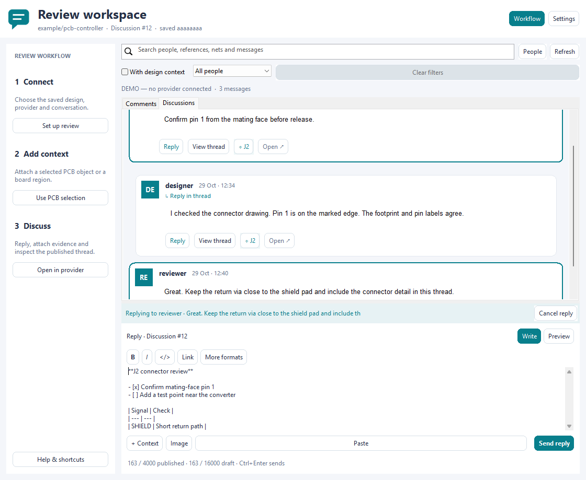
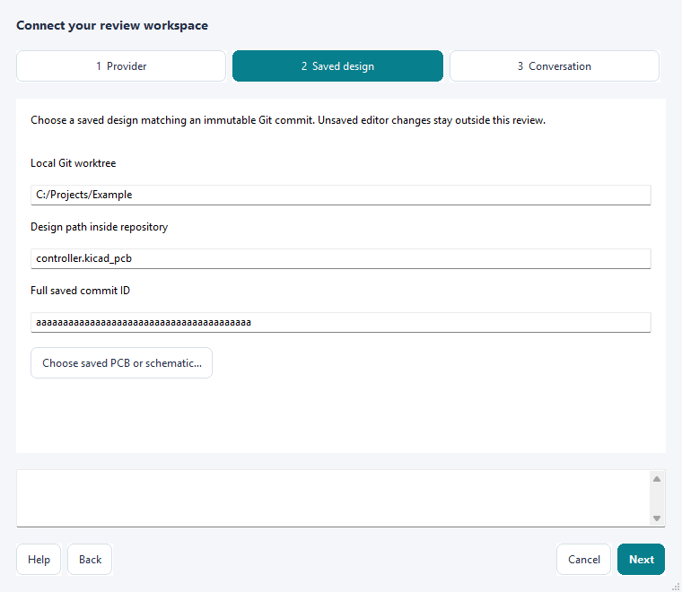

Read engineering conversations as individual messages, with a Reply action on each card. Settings and authentication stay outside the feed. Comments uses the chosen issue/PR/MR conversation; Discussions uses real GitHub Discussions.
Native wx capture with illustrative comments, no provider connected.

Discussions reads every supported comment/reply page through GraphQL and posts native threaded replies. Replies to replies remain in their top-level Discussion thread. GitLab notes remain under Comments.

Settings guides you through Provider, Saved design and Conversation. Choose a saved design to detect its Git context. Choose Connect with browser to use the official CLI in this computer browser; the phone is separate. Connected requires a successful API check. A confirmed rejected stored GitLab CLI session is replaced only by this explicit Connect action. Missing sessions open sign-in directly; network and permission errors preserve credentials. Cancel sign-in stops an unfinished flow. If no browser opens, cancel and use Copy terminal sign-in command in your normal PowerShell window to expose interactive CLI prompts.
The formatting toolbar supports bold, italic, headings, code, lists, tasks, quotes, HTTPS links and tables. Ctrl+B / Ctrl+I / Ctrl+K format selections; Ctrl+Enter sends. Pasted HTML becomes safe Markdown. Preview renders locally without scripts, remote images or automatic link navigation.
Use Workflow to fold the sidebar and drag the horizontal divider to resize the composer. Drafts retain up to 16000 characters; messages allow 4000 including generated links/reply text. Overlong drafts are preserved locally.
Paste images, select Image or drop PNG/JPEG files onto the composer. Up to four files, each at most 4 MiB and 16 megapixels, are accepted. Each GitLab upload has an approval preview; upload copies become PNG at most 1024 pixels per side. Pending attachments have removable chips and local thumbnails. GitHub attachments use its browser editor.
Illustrative native demo: no provider upload is represented.
| Control | Use |
|---|---|
| + Context | Attach a selected PCB object or a region in mm. The UUID must exist in the saved revision. Clear context from the same menu. |
| Design-item chip | Locate the provider-anchored PCB object in the originating editor. No shapes are inserted or saved. |
| Image / Paste / drop | GitLab: paste a clipboard image, inspect the preview, approve upload and send its reference. Images are normalized to at most 1024 pixels per side. A screenshot chip removes it from the pending message. GitHub: attach using its browser editor, then refresh here. |
| Reply | Opens a compact inline reply banner. Cancel returns to a new message without deleting your text. |
View thread focuses a message and its replies. All messages returns to the feed without changing your draft or pending reply. Search is scoped to the open thread; combine it with the author chooser and With design context. Clear filters resets search and filters while keeping the thread and draft. People highlights authors without hiding other messages. A removed thread returns to the surviving feed after refresh.
Message actions wrap on narrow cards. The guided sidebar initially folds in small windows; an explicit Workflow choice is retained while the pane is open. More formats expands headings, lists, tasks, quotes, tables and fenced code without crowding the main toolbar. Write and Preview identify the current composer view; the send action identifies a new message or reply. The published-character estimate includes generated reply and image links.
| Shortcut | Action |
|---|---|
| Ctrl+F | Focus search. |
| Ctrl+Shift+P | Switch Write / Preview locally. |
| Ctrl+B / Ctrl+I / Ctrl+K | Bold / italic / HTTPS link. |
| Ctrl+Enter | Send explicitly to the active provider conversation. |
| Escape | Return to Write, cancel a reply, leave thread focus, then clear filters, one step at a time. Draft text is retained. |
Active panes refresh about every eight seconds, backing off to two minutes after failures. Hidden/inactive panes pause. The feed builds at most 80 cards at once and preserves reading position. Participants are observed authors, not online presence or typing indicators.
Local data is an optional cache plus separate unpublished drafts. It never establishes publication. Failed reads stay visibly stale. Conversation changes preserve the outgoing draft and pause editing until the destination is ready. Ambiguous write failures retain text: refresh and inspect the provider before retrying. Writes are never automatically retried.
Saved bytes must match the chosen commit apart from normal LF/CRLF checkout conversion. Exact local-byte hashes protect later operations; unsaved live geometry is outside this review. Live schematic selection, native region overlays, inline PR diff reviews and review summaries are unsupported. GitHub Projects and GitLab boards open in provider UI.
Run python -m review_comments_plugin.cli --help. The post command previews unless --publish is supplied. Set kind: discussion and an existing Discussion number for the GraphQL backend.